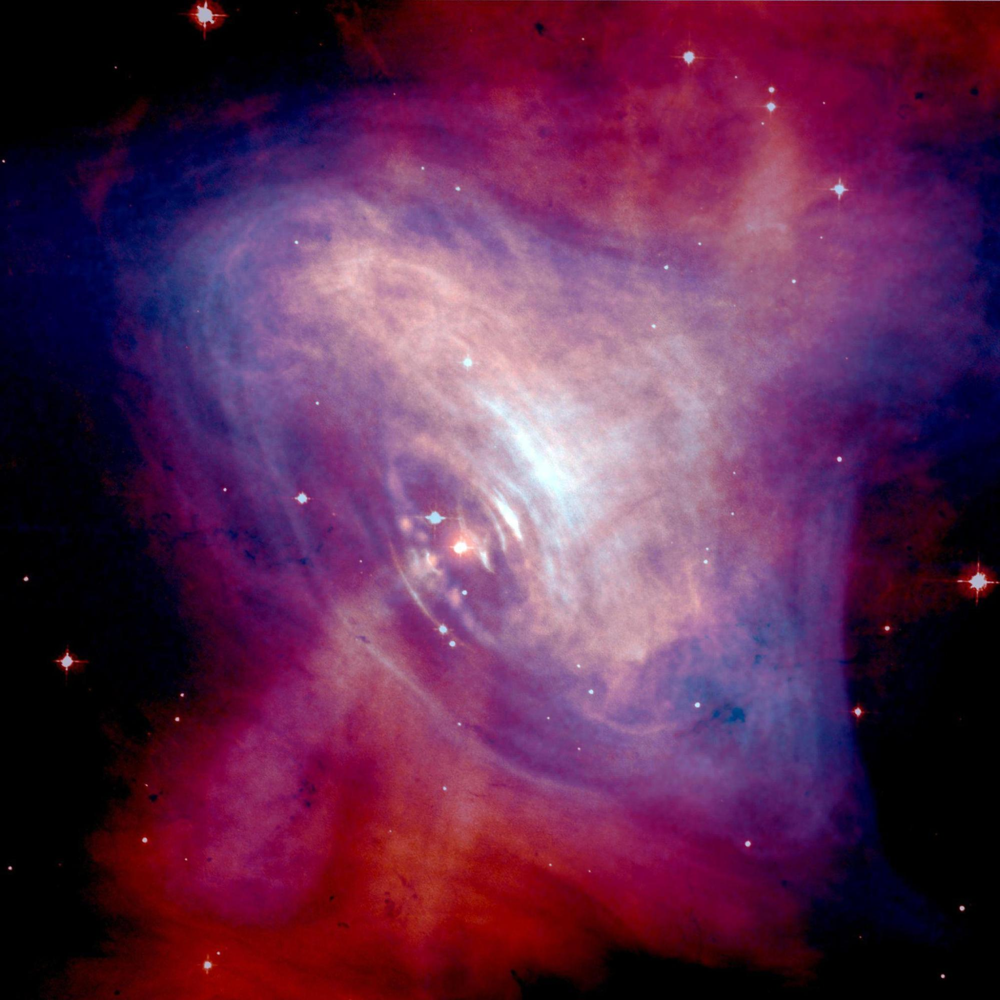
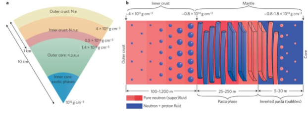
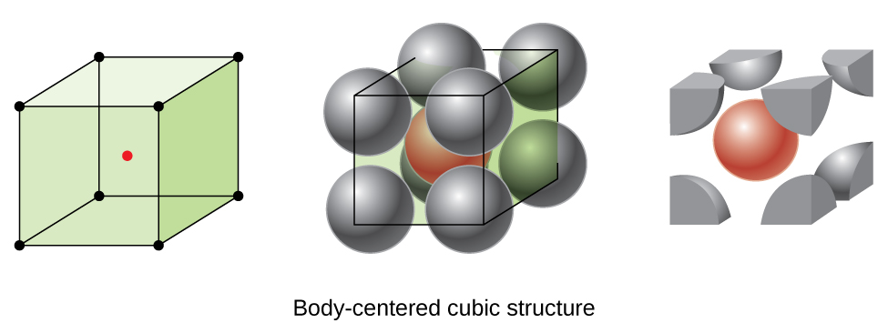

Nuclear Pasta in the crust of neutron star
The article discusses the structure of the neutron star crust. In the neutron star’s crust, exotic structures commonly known as “nuclear pasta” are believed to exist. The pasta structure impacts various structural, thermal and transport properties of the crust and therefore needs to be investigated. Using a simple nuclear model, the present article estimates the content of pasta structures in the crust and its implication on the neutron star properties.

Pictorial representation of the Crab Pulsar (PSR B0531+21) in the centre of the Crab Nebula (a remnant of the supernova SN 1054), which was discovered in 1968. Pulsars are rapidly spinning neutron stars with very strong magnetic fields which funnel jets of particles out along the two magnetic poles. The image combines optical data from Hubble (in red) and X-ray images from Chandra (in blue). Adopted from NASA.
Introduction
In 1934, a few years after the discovery of the neutron, astronomers Baade and Zwicky, in their pioneering work, coined the term “supernova” and hypothesised the existence of neutron stars. It took another 30 years for astronomers to discover the first neutron star in 1968. The discovery of the neutron star unfolded a new era of science with nuclear astrophysics as its main focus. A neutron star is formed from the collapsed core of a massive star that has undergone a supernova explosion. The massive stars, during their lifetime, ignite their core elements up to the Iron (Fe), after which fusion stops as it is the most stable element in the periodic table. This results in the gravitational collapse of the star due to the unavailability of the fuel to counter gravity, giving rise to the supernova explosion. During the supernova, the outer layers of the star are blown away while the core collapses in on itself, causing the protons and electrons in the core to combine and form neutrons. This creates a dense, compact object consisting almost entirely of neutrons compressed into a radius of only about 10 km. The density of a typical neutron star material is 1014 times that of water.
In recent years, the origin, structure and dynamics of neutron stars have played a central role in multi-messenger and gravitational-wave astronomy. It has provided us with the opportunity to understand the behaviour of fundamental forces, especially strong and weak nuclear forces, in extreme environmental situations. In the last few decades, enormous efforts have been applied to understand the structure of the neutron star, which is limited by our understating of nuclear many-body force. However, with the available variety of data from various astrophysical observations, we can now better constrain the neutron star observables such as mass, radius, tidal deformity (how deformable neutron star is) etc., and the behaviour of the equation of state (EoS) over a wide density range.
Structure of Neutron Star

Figure 1: Schematic diagram of a neutron star with its interior and surface. Adopted from ( Nature Physics 9, 396–397 (2013))
The structure of a typical neutron star can be divided into three distinct parts below its thin atmosphere:
1. Outer crust:- The ground state of the outer crust of a neutron star can be described by a body-centred cubic (BCC) lattice of atomic nuclei embedded in the sea of electrons, making it globally charge neutral. With increasing star depth, more and more neutron-rich nuclei appear until the onset of the inner crust, where neutrons start dripping (i.e. nuclei are unbounded with respect to the neutron emission). The BCC structure is preferred due to its smallest lattice energy as compared to the face-centred cubic (FCC) and simple cubic (SC) lattices.

2. Inner Crust:- The inner crust is marked by the assembly of the clusters formed by neutrons and protons along with the unbound dripped neutrons making the neutron gas. The dripped neutrons stay confined in the unit cell due to the large gravitational pressure. Such a system is so extreme that it is not possible to mimic it in any laboratory on earth. The system is made neutral by the electron gas, which is distributed uniformly over the cluster and neutron gas. At high densities, i.e., near the crust-core transition density, the system becomes “frustrated” as a result of competition between the nuclear and Coulomb interactions. The frustration leads to the system arranging itself into various exotic geometries (spheres/gnocchi, rods/spaghetti, slabs/lasagna, cylindrical voids/anti-spaghetti and spherical voids/anti-gnocchi) commonly known as “nuclear pasta.”
3. Core:- As the density increases, the size of the cluster in the inner crust increases, and at a density called transition density, the inhomogeneities disappear, and we enter the liquid core of the star. The core is further divided into the outer and inner cores. While the outer core consists of an admixture of neutrons and protons along with the leptons ensuring charge neutrality and β–equilibrium (the chemical potential of neutron equals the chemical potential of proton and electron), the exact composition of the inner core is not yet fully understood. Various estimations in the form of Quark plasma, Kaon condensate, etc., have been formulated for the inner core in the past.
While the core of the neutron star predominantly determines the global properties of a neutron star, it is hidden behind a thin shell in the form of the crust. Therefore, to accurately determine the core structure and dynamics, it is crucial to understand the physics of the crust. It is not only relevant in the context of neutron star physics but acts as a highly sophisticated laboratory to test nuclear theories and models.
Out of various structural aspects of the crust, the presence of pasta in the denser region of the inner crust has long been debated. Although there exists no direct and robust observational evidence of nuclear pasta, various tantalising observations indicate its existence. These observations include the information of magnetic field decay of neutron stars, corresponding spin evolution, quasi-periodic oscillations (QPOs) in soft gamma repeaters (SGRs) (astronomical object which emits large bursts of gamma-rays and X-rays at irregular intervals), quasi-periodic oscillations in giant flares etc. The amount of these pasta structures in the inner crust plays a pivotal role in the explanation of various neutron star properties.
Results and Discussions
To investigate the possible presence of the pasta structures in the inner crust of a neutron star, we use the Compressible Liquid Drop Model(CLDM) in association with the Effective Relativistic Mean Field(E-RMF) theory. CLDM is a modified version of the conventional liquid drop model, which is one of the oldest, most groundbreaking and simplistic formalisms to explain the binding energy of an atomic nucleus. It takes the motivation from molecular physics, where the behaviour of a classical liquid drop is found to be analogous with the behaviour of an atomic nucleus. This is due to the fact that the forces binding both a liquid drop (Van-der Waals force) and a nucleus (residual strong force) are qualitatively similar. Therefore assuming the nucleus to be incompressible, the energy of a nucleus can be simply written in the form of its volume, surface and Coulomb energy. The CLDM modifies it for the case of neutron star crust and takes into account the compressibility of nuclear matter, negative lattice Coulomb energy, and the suppression of surface tension by the surrounding neutron gas. Using the Wigner-Seitz(WS) approximation, the energy of the system in the inner crust of a neutron star can simply be written as
In the above equation, the surface, curvature and the coulomb energy correspond to the finite size correction to the bulk energy, i.e. the volume energy in case of liquid drop model. The bulk energy of nuclear matter and energy of the neutron gas is extracted from E-RMF formalism which is a state-of-the-art framework based on quantum chromodynamics (QCD), which is the fundamental theory of strong nuclear interaction. The QCD itself cannot be applied to explain the nuclear matter at low-density, which is one of its unresolved limitations.
The parameter sets of E-RMF theory are designed to satisfy various ground state properties of atomic nuclei, such as binding energy, charge, radius, as well as constraints derived from astrophysical and laboratory observations of mass and radius of neutron stars, and flow data from Heavy-Ion Collisions(HIC).
In our calculations, we use thirteen E-RMF sets, which satisfy the recent observational constraints on the maximum mass and radius of the neutron star. These sets differ in the bulk nuclear matter properties such as symmetry energy (characterises the variation of the binding energy as the neutron to proton ratio of a nuclear system is varied), incompressibility, the binding energy of infinite nuclear matter etc. These properties characterise a particular parameter set, and a large amount of research is undergoing to put stringent constraints on them. However, there are still uncertainties on their exact values, and therefore, the nuclear matter properties become model dependent. In this study, utilising various parameter sets gives us the flexibility to investigate these model dependencies on the existence of pasta structure in the inner crust of the neutron star.
Using the experience from molecular dynamics simulation, we consider five shapes of pasta structures, namely: spheres, rods, slabs, tubes and bubbles. At a given baryon density, energy minimization leads to the identification of the most favourable pasta structure. We see that the spheres occupy the shallower region of the inner crust and are subsequently accompanied by rods, slabs, tubes and bubbles. The number of unique pasta structures occurring in the inner crust of the neutron star depends essentially on the equation of state or the nuclear model considered. Out of various bulk matter properties, the symmetry energy governs the pasta content in the crust. An equation of state with larger symmetry energy in the subsaturation density regions (⍴< 0.1 fm-3) estimate a thicker crust with more unique pasta layers. The transition (transition from heterogeneous crust to the homogenous core) pressure and density also depend on the symmetry energy. These parameters are crucial inputs to calculate the crust profile of the neutron star. Accurate knowledge of these parameters, in association with the determination of symmetry energy from various Heavy Ion Collision experiments, can give us the opportunity to understand nuclear interaction in more detail.
The typical thickness of the inner crust of a neutron star is approximately 1 km. We see that pasta layers constitute almost 50% of the crust mass and account for 20% of its thickness. These results are important as the pasta structure impacts various phenomena in the neutron star crust, such as its cooling, rotation, Quasiperiodic Oscillations (QPOs) etc. QPOs (related to the vibrations of the neutron star crust) provide us with much-needed information on the neutron star crust structure. In our calculations, we found that the pasta structure significantly impacts the fundamental frequency mode of these oscillations. In addition, they also alter the shear response of the crust. The pasta structure does not affect the global properties of the neutron star, yet it profoundly impacts the microphysics of the crust.
The results of the present work need to be confirmed by future measurements of neutron star observables. Moreover, modern theoretical Bayesian analysis methods also serve as an aid in determining these results, and our results are in agreement with them.
Original paper: Pasta properties of the neutron star within effective relativistic mean-field model
First Author: Vishal Parmar
Co-authors: H. C. Das, Ankit Kumar, Ankit Kumar, M. K. Sharma, P. Arumugam, and S. K. Patra
First author’s Institution: Thapar Institute of Engineering and Technology, Patiala 147004, India